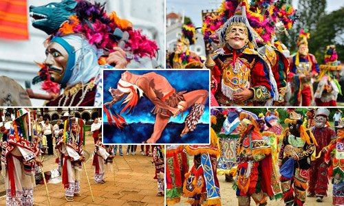
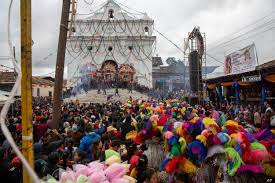
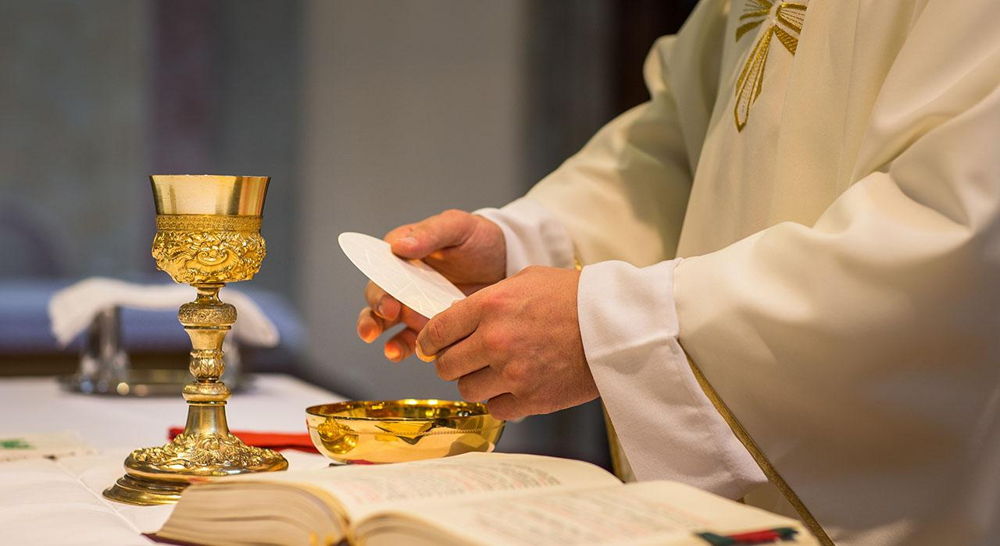
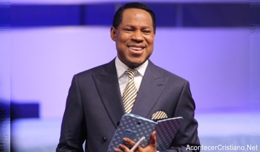
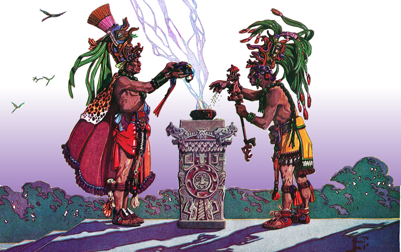

El Venado, El Palo Volador, Rabinal Achí, Los Mazates, De Toritos, Moros y Cristianos, Mexicanos, La Conquista, De Cortez, El Costeño, El Chico Mudo, Los Huehuechos, La Sierpe, Los Negritos, Los Animalitos, Los Judíos y Las Flores.


 